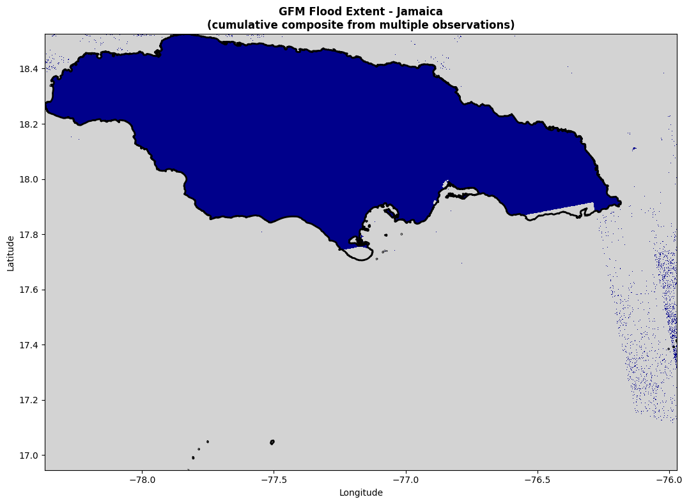

GFM distributes flood extent data as Cloud-Optimized GeoTIFFs (COGs) through a STAC API hosted by EODC. Each STAC item represents one satellite observation tile — typically a Sentinel-1 pass over a ~100km swath. This chapter walks through connecting to the API, searching for flood observations, and building a lazy xarray stack from the results.
Code
import pystac_clientimport stackstacimport matplotlib.pyplot as pltfrom matplotlib.colors import ListedColormap, BoundaryNormimport numpy as npimport geopandas as gpdfrom fsspec.implementations.http import HTTPFileSystemfrom ds_flood_gfm.geo_utils import load_adm0_lowres%matplotlib inlineplt.rcParams['figure.dpi'] =100
A.1 Area of Interest
We’ll use Jamaica during Hurricane Melissa (October 2025) as a running example throughout the book. The admin boundaries come from FieldMaps.io humanitarian COD datasets.
Each item carries metadata about its acquisition time and available assets. The key asset for flood detection is ensemble_flood_extent — the 2-of-3 algorithm consensus.
Code
# Inspect one itemitem = item_collection[0]print(f"Item ID: {item.id}")print(f"Datetime: {item.datetime}")print(f"Assets: {list(item.assets.keys())}")
A.3 The Spatial Metadata Problem
WarningSTAC footprints are larger than actual data extent
The STAC catalog returns items whose metadata footprint intersects the query bbox. But the footprint is a buffered bounding box of the Sentinel-1 tile, not the actual data extent. This means items can be returned that have no actual flood data overlapping our AOI.
This causes confusion downstream: the cache key is built from all returned dates, but some of those dates may contribute zero pixels to the composite.
The stac_spatial_filter module addresses this by reading each COG’s actual geographic bounds from its header (without downloading pixel data) and filtering out false positives.
A.4 Building a Lazy xarray Stack
stackstac converts the STAC item collection into a lazy xarray DataArray. No pixel data is downloaded at this point — it builds a virtual array that knows where each tile lives and will fetch data on demand.
Code
stack = stackstac.stack(item_collection, epsg=4326)print(f"Stack shape: {stack.dims} = {dict(zip(stack.dims, stack.shape))}")stack_flood = stack.sel(band="ensemble_flood_extent")# Clip to AOI boundsstack_flood_clipped = stack_flood.sel( x=slice(bbox[0], bbox[2]), y=slice(bbox[3], bbox[1]))# Group by day and take the maximum flood value per day# (multiple Sentinel passes can occur on the same day)stack_flood_max = stack_flood_clipped.groupby("time.date").max()stack_flood_max = stack_flood_max.rename({"date": "time"})stack_flood_max["time"] = stack_flood_max.time.astype("datetime64[ns]")print(f"Daily composites: {len(stack_flood_max.time)} days")
A.5 Visualizing Flood Extent
A single day’s observation typically has coverage gaps — areas where no Sentinel-1 pass overlapped on that day. This motivates the temporal compositing covered in Appendix B.
Here we load a pre-computed provenance raster from blob storage. The provenance raster encodes which observation date each pixel came from — we’ll explain how it’s built in the next chapter. For now, note the areas with no data (grey) where satellite coverage was absent.
Code
import ocha_stratus as stratus# Load a pre-computed provenance raster from blobblob_name ="ds-flood-gfm/processed/provenance_raster/JAM_20251105_20251108_20251110_20251111_nopop_cumulative_provenance.tif"da_prov = stratus.open_blob_cog(blob_name, container_name="projects").squeeze(drop=True)print(f"Provenance raster shape: {da_prov.shape}")print(f"CRS: {da_prov.rio.crs}")print(f"Bounds: {da_prov.rio.bounds()}")
fig, ax = plt.subplots(1, 1, figsize=(14, 8))# The provenance raster has integer indices; -1 or nodata = no observationdata = da_prov.valuesextent =list(da_prov.rio.bounds())# rasterio bounds are (left, bottom, right, top) -> imshow wants [left, right, bottom, top]extent_imshow = [extent[0], extent[2], extent[1], extent[3]]# Simple visualization: show data vs no-datahas_data =~np.isnan(data) & (data >=0) if np.issubdtype(data.dtype, np.floating) else (data >=0)colors_binary = ["lightgrey", "darkblue"]cmap_binary = ListedColormap(colors_binary)data_viz = has_data.astype(float)data_viz = data_viz[::4, ::4]ax.imshow(data_viz, cmap=cmap_binary, interpolation="nearest", origin="upper", extent=extent_imshow, vmin=0, vmax=1)gdf_aoi.boundary.plot(ax=ax, color="black", linewidth=2, alpha=1.0)ax.set_title("GFM Flood Extent - Jamaica\n(cumulative composite from multiple observations)", fontsize=12, fontweight="bold")ax.set_xlabel("Longitude")ax.set_ylabel("Latitude")plt.tight_layout()plt.show()

Source Code
# Querying the Global Flood Monitoring System {#sec-querying-gfm}---jupyter: ds-flood-gfm---GFM distributes flood extent data as Cloud-Optimized GeoTIFFs (COGs) through a STAC API hosted by EODC. Each STAC item represents one satellite observation tile --- typically a Sentinel-1 pass over a ~100km swath. This chapter walks through connecting to the API, searching for flood observations, and building a lazy xarray stack from the results.```{python}import pystac_clientimport stackstacimport matplotlib.pyplot as pltfrom matplotlib.colors import ListedColormap, BoundaryNormimport numpy as npimport geopandas as gpdfrom fsspec.implementations.http import HTTPFileSystemfrom ds_flood_gfm.geo_utils import load_adm0_lowres%matplotlib inlineplt.rcParams['figure.dpi'] =100```## Area of InterestWe'll use Jamaica during Hurricane Melissa (October 2025) as a running example throughout the book. The admin boundaries come from FieldMaps.io humanitarian COD datasets.```{python}notebook_config = {'iso3': 'JAM','event_name': 'Hurricane Melissa','start_date': '2025-10-20','end_date': '2025-10-29',}GLOBAL_ADM1 = ("https://data.fieldmaps.io/edge-matched/humanitarian/intl/adm1_polygons.parquet")filesystem = HTTPFileSystem()filters = [("iso_3", "=", notebook_config['iso3'])]gdf = gpd.read_parquet(GLOBAL_ADM1, filesystem=filesystem, filters=filters)gdf_aoi = gdf.dissolve() # dissolve to country outlinebbox = gdf_aoi.total_bounds```## Connecting to the STAC APIThe GFM STAC catalog lives at `https://stac.eodc.eu/api/v1`. We search the `GFM` collection by bounding box and date range.```{python}#| eval: falsestac_api ="https://stac.eodc.eu/api/v1"client = pystac_client.Client.open(stac_api)datetime_range =f"{notebook_config['start_date']}/{notebook_config['end_date']}"search = client.search( collections=["GFM"], bbox=bbox, datetime=datetime_range,)item_collection = search.item_collection()print(f"Found {len(item_collection)} STAC items")```Each item carries metadata about its acquisition time and available assets. The key asset for flood detection is `ensemble_flood_extent` --- the 2-of-3 algorithm consensus.```{python}#| eval: false# Inspect one itemitem = item_collection[0]print(f"Item ID: {item.id}")print(f"Datetime: {item.datetime}")print(f"Assets: {list(item.assets.keys())}")```## The Spatial Metadata Problem::: {.callout-warning}## STAC footprints are larger than actual data extentThe STAC catalog returns items whose **metadata footprint** intersects the query bbox. But the footprint is a buffered bounding box of the Sentinel-1 tile, not the actual data extent. This means items can be returned that have no actual flood data overlapping our AOI.This causes confusion downstream: the cache key is built from all returned dates, but some of those dates may contribute zero pixels to the composite.:::The `stac_spatial_filter` module addresses this by reading each COG's actual geographic bounds from its header (without downloading pixel data) and filtering out false positives.## Building a Lazy xarray Stack`stackstac` converts the STAC item collection into a lazy xarray DataArray. No pixel data is downloaded at this point --- it builds a virtual array that knows where each tile lives and will fetch data on demand.```{python}#| eval: falsestack = stackstac.stack(item_collection, epsg=4326)print(f"Stack shape: {stack.dims} = {dict(zip(stack.dims, stack.shape))}")stack_flood = stack.sel(band="ensemble_flood_extent")# Clip to AOI boundsstack_flood_clipped = stack_flood.sel( x=slice(bbox[0], bbox[2]), y=slice(bbox[3], bbox[1]))# Group by day and take the maximum flood value per day# (multiple Sentinel passes can occur on the same day)stack_flood_max = stack_flood_clipped.groupby("time.date").max()stack_flood_max = stack_flood_max.rename({"date": "time"})stack_flood_max["time"] = stack_flood_max.time.astype("datetime64[ns]")print(f"Daily composites: {len(stack_flood_max.time)} days")```## Visualizing Flood ExtentA single day's observation typically has coverage gaps --- areas where no Sentinel-1 pass overlapped on that day. This motivates the temporal compositing covered in @sec-temporal-compositing.Here we load a pre-computed provenance raster from blob storage. The provenance raster encodes which observation date each pixel came from --- we'll explain how it's built in the next chapter. For now, note the areas with no data (grey) where satellite coverage was absent.```{python}import ocha_stratus as stratus# Load a pre-computed provenance raster from blobblob_name ="ds-flood-gfm/processed/provenance_raster/JAM_20251105_20251108_20251110_20251111_nopop_cumulative_provenance.tif"da_prov = stratus.open_blob_cog(blob_name, container_name="projects").squeeze(drop=True)print(f"Provenance raster shape: {da_prov.shape}")print(f"CRS: {da_prov.rio.crs}")print(f"Bounds: {da_prov.rio.bounds()}")``````{python}fig, ax = plt.subplots(1, 1, figsize=(14, 8))# The provenance raster has integer indices; -1 or nodata = no observationdata = da_prov.valuesextent =list(da_prov.rio.bounds())# rasterio bounds are (left, bottom, right, top) -> imshow wants [left, right, bottom, top]extent_imshow = [extent[0], extent[2], extent[1], extent[3]]# Simple visualization: show data vs no-datahas_data =~np.isnan(data) & (data >=0) if np.issubdtype(data.dtype, np.floating) else (data >=0)colors_binary = ["lightgrey", "darkblue"]cmap_binary = ListedColormap(colors_binary)data_viz = has_data.astype(float)data_viz = data_viz[::4, ::4]ax.imshow(data_viz, cmap=cmap_binary, interpolation="nearest", origin="upper", extent=extent_imshow, vmin=0, vmax=1)gdf_aoi.boundary.plot(ax=ax, color="black", linewidth=2, alpha=1.0)ax.set_title("GFM Flood Extent - Jamaica\n(cumulative composite from multiple observations)", fontsize=12, fontweight="bold")ax.set_xlabel("Longitude")ax.set_ylabel("Latitude")plt.tight_layout()plt.show()```